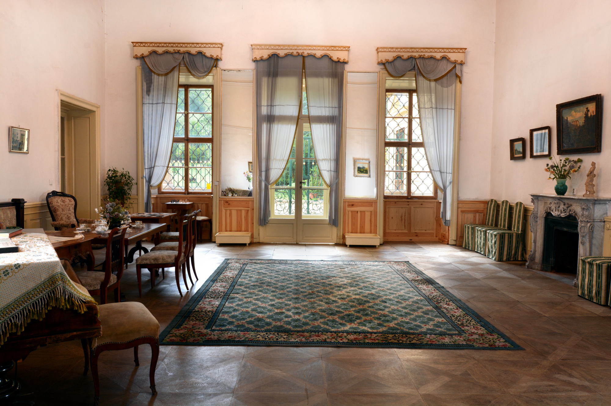
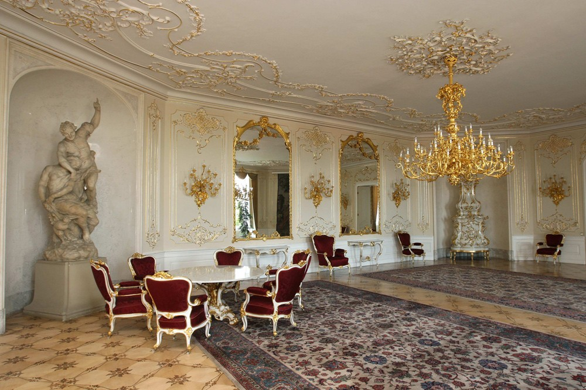
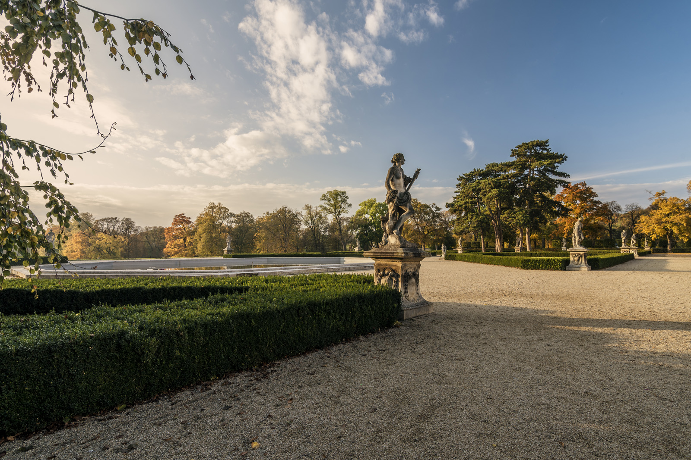

Expozice
Zámecký interiér
V této expozici si můžete prohlédnout přízemí jedovického zámku. Podíváte se tak do plně zařízených obytných prostor a můžete také nahlédnout do zámecké kaple. Délka prohlídky je 60 minut.
Reprezentační prostory
Tento okruh vám nabídne možnost navštívit reprezentační prostory zámku Jedovnice, mezi něž patří například nádherně zdobený přijímací salon či audienční síň v barokním stylu. Délka prohlídky je 95 minut.
Zámecký park
V areálu zámku se nachází také zámecký park, který je volně přístupný všem návštěvníkům. Park je rozdělen do tří sekcí, z nichž se každá vyznačuje svým jedinečným stylem. Součástí parku je rovněž zámecký zvěřinec.